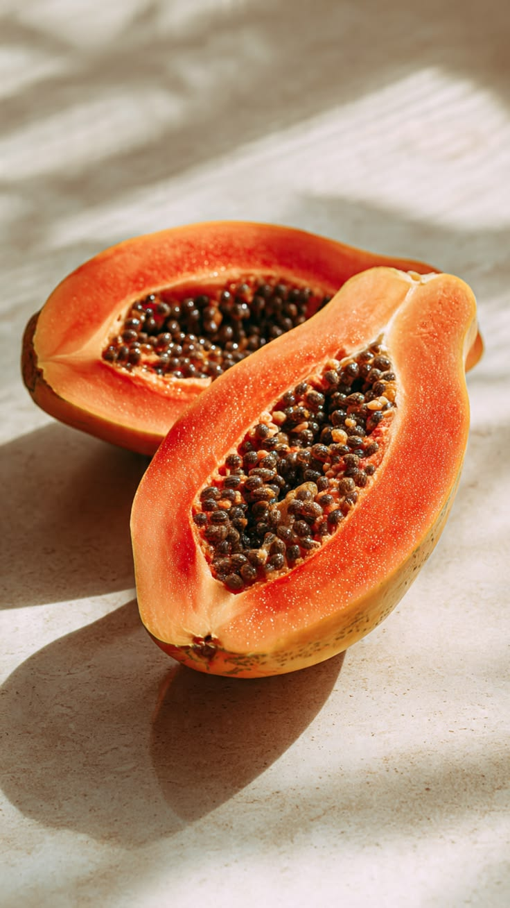
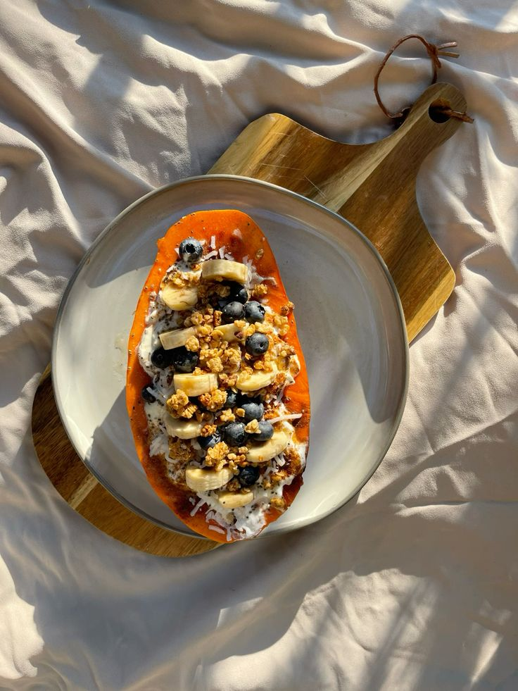
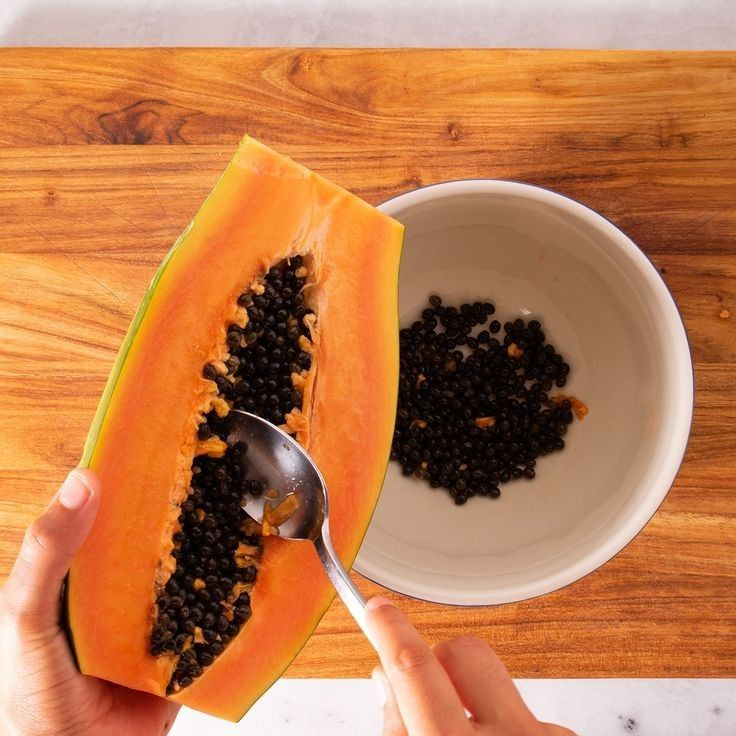
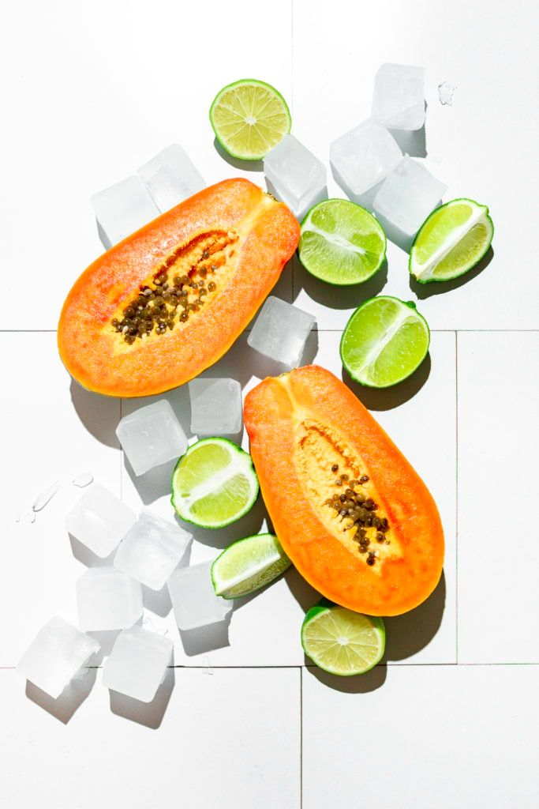

All About Papayas
Bright orange, naturally sweet, and full of nutrients, papayas have become a staple in wellness culture for good reason. Originally grown in tropical regions of Central America and Southern Mexico, papayas are now enjoyed around the world for their refreshing flavor and impressive health benefits. Whether blended into smoothies, added to fruit bowls, or eaten fresh with lime, this vibrant fruit offers more than just aesthetic appeal.
One of the biggest reasons nutritionists recommend papayas is their high vitamin C content. A single papaya contains more vitamin C than an orange, helping support the immune system while protecting the body from oxidative stress. Papayas are also rich in vitamin A, potassium, fiber, and folate, making them a nutrient-dense addition to any balanced diet.

Beyond vitamins, papayas are known for containing papain, a natural digestive enzyme that helps break down proteins and support healthy digestion. This is one reason papaya is often recommended after heavy meals or incorporated into wellness-focused diets. Many people find the fruit gentle on the stomach while also helping reduce bloating and discomfort.
Papayas may also contribute to healthier skin. Thanks to their antioxidant content, they help fight free radicals that can contribute to premature aging. The combination of vitamin C and beta carotene supports collagen production, which plays a key role in maintaining smooth and radiant skin. Some skincare brands even use papaya extract in exfoliating cleansers and masks because of its naturally renewing properties.

Adding papaya to your routine is surprisingly simple. Fresh slices can be enjoyed with yogurt and granola, blended into tropical smoothies, or tossed into salads for extra sweetness. For a savory twist, green papaya is commonly used in Southeast Asian dishes such as Thai papaya salad, combining crunchy texture with spicy and citrusy flavors.
When shopping for papayas, look for fruit with yellow-orange skin that feels slightly soft when pressed. A ripe papaya should smell subtly sweet and tropical. Once cut, the fruit can be stored in the refrigerator for several days, making it an easy grab-and-go snack for busy mornings or post-workout meals.
